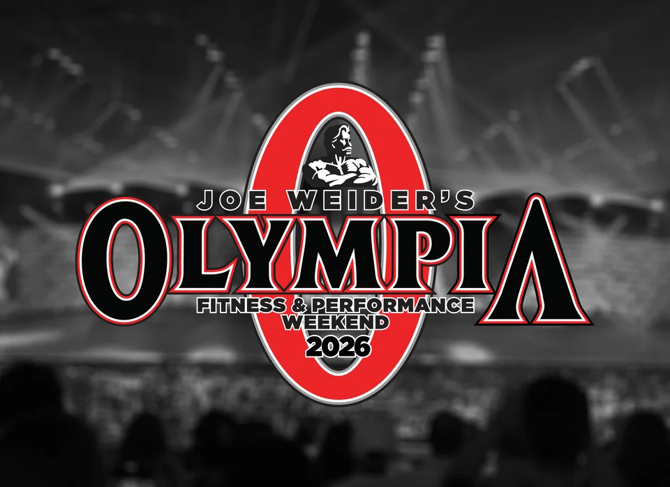
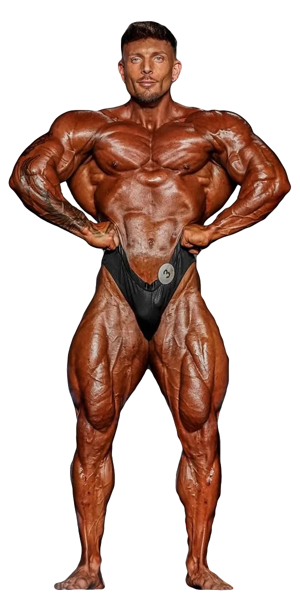
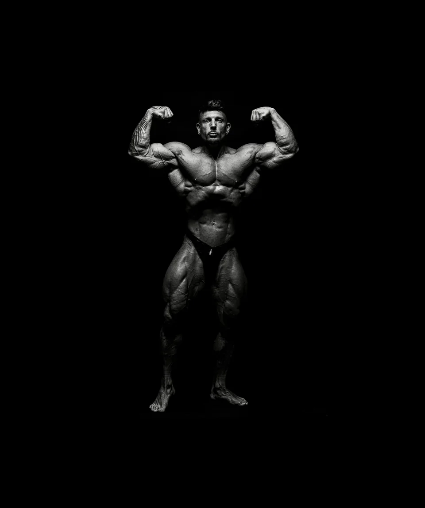

Kim Angel, atleta IFBB Pro de Classic Physique



Encontrar su camino.
Volver a disfrutar.
Años persiguiendo un sueño. Una nueva categoría para seguir construyéndolo.
Kim Angel comenzó a entrenar en el gimnasio en 2011. Durante años compitió en Men’s Physique con un objetivo: llegar al Olympia. El camino exigió paciencia, aprendizaje y la capacidad de replantearse cómo quería vivir la competición.
El salto a Classic Physique abrió una nueva etapa. Como ha explicado en sus entrevistas, buscaba recuperar el disfrute del proceso y competir por pasión. Con Raúl Carrasco como preparador, su evolución empezó a reflejarse también en los resultados.
En 2024 ganó el Tupelo Pro y alcanzó el Olympia. En 2025 volvió a ganar en Tupelo y sumó el triunfo en Atlanta. Su historia sigue creciendo sobre la misma base: entrenar, aprender y encontrar motivos para mejorar cada día.
- 2011El comienzo en el gimnasio
- 2024Tupelo Pro y debut en Olympia
- 2025Victorias en Tupelo y Atlanta
Hall of Fame.
Olympia
-
2025CLASSIC PHYSIQUE
16.º Top Mundial
Olympia 2025
Ver resultado
Arnold Classic
-
2026CLASSIC PHYSIQUE
5.º puesto
Arnold Classic UK
Ver resultado


-
2026CLASSIC PHYSIQUE
4.º puesto
Arnold Classic USA
Ver resultado


Qualifying championships
-
2025CLASSIC PHYSIQUE
2.º puesto
EVLS Prague Pro
Ver resultado


-
2025CLASSIC PHYSIQUE
1.º Campeón
Lenda Murray Atlanta Pro
Ver resultado -
2025CLASSIC PHYSIQUE
1.º Campeón
Tupelo Pro
Ver resultado -
2024CLASSIC PHYSIQUE
1.º Campeón
Tupelo Pro
Ver resultado